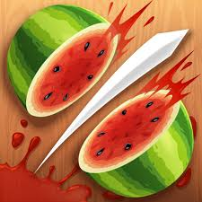

aim tester er inspirert av fruitninja og skal teste dine reaksjonsferdigheter
Fruit Ninja er et populært mobilspill der spilleren kutter frukt som kastes opp på skjermen ved å sveipe fingeren over dem, som om man bruker et sverd. Målet er å kutte så mange frukter som mulig uten å misse for mange – og uten å treffe bomber, som avslutter spillet.
Spillet ble utviklet av Halfbrick Studios, et australsk spillstudio basert i Brisbane. Halfbrick er kjent for å lage enkle, underholdende mobilspill med høy gjenspillingsverdi.
Fruit Ninja ble først lansert den 21. april 2010 for iOS-enheter (iPhone og iPod Touch). Senere ble det også tilgjengelig på Android, Windows Phone, og andre plattformer, inkludert Xbox Kinect og til og med i VR-versjoner.
Utviklingen av Fruit Ninja var relativt rask – det tok bare seks uker fra idé til lansering. Halfbrick ønsket å lage et spill som var lett å spille, men som ga en følelse av tilfredsstillelse, og de lot seg inspirere av klassiske arkadespill. Det intuitive sveipe-grensesnittet gjorde det enkelt for spillere i alle aldre å forstå og spille.
Spillet ble en enorm suksess, og det var et av de første virkelige "casual" mobilspillene som oppnådde global popularitet. På høyden av sin suksess hadde det over 1 milliard nedlastinger.
i dette spillet har du tre liv, for hver gang du bommer tre ganger mister du et liv. Hver gang du treffer den røde prikken kuttes tiden du har på å treffe den neste ned.